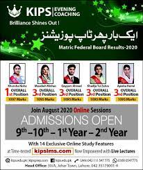

| KIPS COLLEGE |
Why KIPSIn 2004, KIPS began its mission to enlighten intermediate level students with quality education at Lahore. Today, KIPS Colleges have a family of 35+ campuses in 25+ cities across Punjab and the Federal Capital. During these years, students from KIPS Colleges have done wonders not only in board exams but also in the entrance tests for admission to the country’s top professional institutes. Some of the standout qualities of KIPS Colleges, among many others, are comprehensive study, revision and test sessions, a highly qualified and experienced faculty, counseling sessions, and scholarships. A distinctive feature of KIPS Colleges is that it offers its students extra time and effort through its Pre-1st Year session and Revision & Test sessions. These sessions warrant that our students get more time for a more comprehensive preparation and better results. Reasons |
|  |
We believe in the potential of education as the greatest catalyst for positive change in society and strive to keep our students engaged in constructive co-curricular activities. We have a broad range of student societies and organizations which arrange a variety of curricular and co-curricular events
Pre-1st year is a novel concept introduced by KIPS keeping in view the fact that students get a mere 7 months or so to cover the course of Part 1 in i...See More
Result card/marks sheet 9th Class Copy of Parent / Guardian CNIC Copy of Student CNIC/B-Form 3 Recent Passport Size Photographs